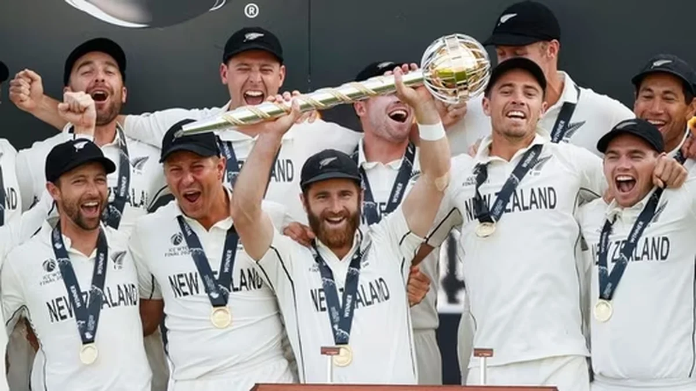
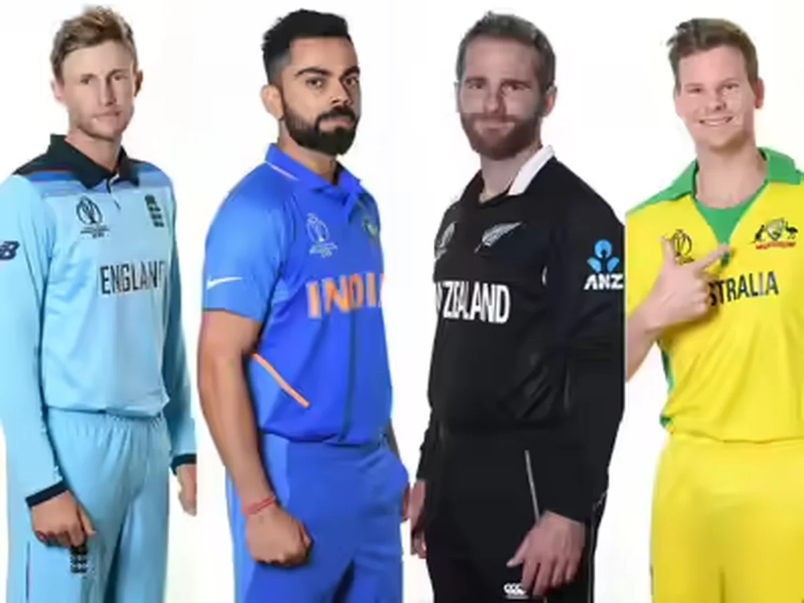

Cricket Just Lost Something It Won't Get Back
Kane Williamson retired today. No farewell tour. No dramatic last innings in front of a packed home crowd. No goodbye century that would've given the internet one final chance to rank him against the other three. He just decided, mid-series in England, that it was time. And then he was gone.
That's the most Kane Williamson thing to ever happen, and if that sentence doesn't immediately make sense to you, then you probably haven't watched him closely enough over the last sixteen years. Because everything about this man's career followed the same pattern: do something extraordinary, refuse to make noise about it, move on to the next thing like nothing happened.
19,346 international runs. 48 centuries. 110 Test matches. A World Test Championship trophy. And somehow, in a sport obsessed with drama, confrontation, and personality, Kane Williamson managed to be one of the greatest batsmen of his generation while being roughly as loud as a library on a Sunday afternoon.
Cricket didn't just lose a player today. It lost a style of existing in the game that we might never see again.
The Man Who Never Needed the Spotlight
Here's what made Williamson fundamentally different from every other elite cricketer of his era: he genuinely did not care about being famous.
That sounds like a PR statement. It sounds like something a media-trained athlete says in an interview while their agent schedules their next brand deal. But with Williamson, it was actually true. The man had no public feuds. No on-field blow-ups. No controversial Instagram posts. No angry press conferences where he threw teammates under the bus after a loss. In sixteen years of international cricket, playing in the highest-pressure situations imaginable, he never once gave anyone a reason to write a negative headline about him.
Try to name another cricketer of his caliber who can say the same. Virat Kohli is a force of nature, but he comes with fire and fury. Steve Smith is a genius, but his career has controversy etched into it. Joe Root has dealt with captaincy pressure that's aged him visibly. Williamson had none of that. He was the one member of the Fab Four who just... played cricket. Beautifully, consistently, and without ever asking for attention in return.
In modern sport, where controversy generates clicks and personality generates endorsement deals, choosing to be quiet is almost an act of rebellion. Williamson didn't rebel on purpose. He was just wired that way. And the cricket world is poorer for losing the one superstar who proved you could reach the absolute summit without ever raising your voice.
The Night He Beat India and Still Didn't Celebrate

June 2021. Southampton. The inaugural World Test Championship final. New Zealand vs India. The two best Test teams on the planet, playing for a trophy that was supposed to give Test cricket a proper championship for the first time.
New Zealand won. And if any other captain in world cricket had led their team to victory in that situation, you would have seen screaming, running, jersey-ripping, crowd-pointing, camera-staring celebrations that would've gone viral within seconds.
Williamson smiled. He hugged his teammates. He lifted the mace with both hands. And then he said something in the post-match interview that was so understated, so perfectly him, that it almost got lost in the celebration: he talked about how proud he was of the team, how the effort was collective, how the conditions played their part. He barely mentioned himself.
New Zealand had just achieved the single greatest result in their cricket history, and their captain's first instinct was to deflect the credit.
That's not modesty. Modesty is when you downplay something small. This was something else entirely. This was a man who genuinely processed team achievement as more important than personal glory, even in the biggest moment of his career. And in a sport where captains routinely take the spotlight, Williamson kept handing it back to everyone else.
The Fab Four, Minus One

The Fab Four was never an official thing. Nobody voted on it, no committee decided it, no trophy was created for it. It was just something that cricket fans and commentators started saying around 2014-2015 when it became obvious that four batsmen from four different countries were operating on a level that separated them from everyone else in the world.
Virat Kohli. Kane Williamson. Steve Smith. Joe Root. Each one different. Each one brilliant. Each one capable of winning a match single-handedly in conditions that would break a normal batsman.
But here's the thing about the Fab Four that always bothered me slightly: it was never really a level playing field. Kohli, Smith, and Root played for countries with massive cricketing infrastructure, huge fan bases, and schedules packed with high-profile matches. Williamson played for New Zealand. A country with a population smaller than some Indian cities. A country that doesn't get the same broadcast attention, doesn't command the same IPL contracts, doesn't generate the same social media followers.
And yet, his numbers were right there with the other three. 54.06 Test average. 33 Test centuries. Not just competitive with Kohli and Smith and Root. Genuinely comparable. He did it with fewer resources, less spotlight, and against the same bowling attacks that everyone else faced.
Kane Williamson's 48 international centuries include 33 in Tests, 15 in ODIs. His Test average of 54.06 is the highest among all Fab Four members. He also led New Zealand to three consecutive ICC tournament finals: 2019 World Cup, 2021 WTC, and 2021 T20 World Cup.
19,000 Runs and Zero Headlines
Let me give you a number that puts Williamson's career in perspective.
19,346 international runs. That's not just the most by any New Zealand cricketer ever. That's more than most all-time greats from countries with ten times the population and a hundred times the cricketing budget. He didn't just represent New Zealand well. He elevated the entire country's cricketing identity through sheer, relentless quality.
And he did it without a single headline controversy. Nineteen thousand runs and not one moment where the story was about something other than cricket. No social media drama. No leaked WhatsApp chats. No "sources close to the dressing room" stories. No angry fans burning his effigy outside a stadium. In sixteen years of being one of the most watched athletes in a cricket-obsessed world, he managed to keep the focus entirely on the sport.
Think about how difficult that is. Think about the scrutiny that international cricketers face. Every shot analysed, every decision questioned, every bad series turned into a narrative about decline or mental weakness. Williamson navigated all of it with a composure that wasn't performed. It was genuine. The man simply cared about batting, captaincy, and winning matches for New Zealand. Everything else was noise, and he chose not to participate in noise.
Under his captaincy, New Zealand reached the 2019 World Cup final (lost on a boundary countback rule that still haunts cricket fans). They won the WTC. They reached the 2021 T20 World Cup final. Three consecutive ICC tournament finals from a country that most pundits would've ranked 5th or 6th in the world. That doesn't happen without extraordinary leadership, and Williamson provided it without ever once looking like he was trying to be a leader.
Why We Won't See Another Kane Williamson
Modern cricket is moving in a direction that makes Kane Williamson's style of existence almost impossible to replicate. The sport is louder now. More commercial. More personality-driven. T20 leagues demand brand visibility. Social media demands engagement. Sponsors want faces that generate clicks, not faces that generate quiet respect.
The next generation of cricketers is being raised in a world where your Instagram following matters as much as your average. Where a viral celebration gets you more endorsements than a technically perfect cover drive. Where being boring, even if you're brilliant, is a commercial liability.
Williamson didn't fit that world. And that's exactly why losing him feels like losing more than just a player. We're losing proof that it was possible to be genuinely great at cricket without being a brand, a personality, or a controversy magnet. Proof that you could captain your country to the summit of the sport while being the kind of person who'd hold the door open for the opposition and mean it.
His teammates loved him. His opponents respected him. The cricketing public admired him. And he never, not once, tried to make any of those things happen. They happened because of who he was, not because of who he was trying to be.
Kohli will be remembered for his intensity. Smith for his genius. Root for his endurance. Williamson will be remembered for something rarer than all of those things combined: he'll be remembered for his grace.
19,346 runs. 48 centuries. 110 Tests. One WTC mace. Zero drama. Cricket will keep producing superstars. It won't produce another Kane Williamson. Some things only happen once.
📷 Image Credits: Images via ICC/NZC
Frequently Asked Questions
When did Kane Williamson retire?
Kane Williamson announced his retirement from all international cricket on June 12, 2026, at the age of 35. He retired mid-series during New Zealand's tour of England.
How many runs did Kane Williamson score in his career?
Kane Williamson scored 19,346 international runs across all formats — 9,515 in Tests (average 54.06), 7,256 in ODIs (average 48.69), and 2,575 in T20Is. He hit 48 international centuries including 6 double centuries.
Did Kane Williamson win the World Test Championship?
Yes. Kane Williamson captained New Zealand to victory in the inaugural ICC World Test Championship final in 2021, defeating India at the Ageas Bowl in Southampton.
Who are the Fab Four in cricket?
The Fab Four refers to Virat Kohli (India), Kane Williamson (New Zealand), Steve Smith (Australia), and Joe Root (England) — four contemporary batting greats who dominated cricket across the 2010s and 2020s. With Williamson's retirement, the group loses its first member from international cricket.
What is Kane Williamson's highest Test score?
Kane Williamson's highest Test score is 251, scored against the West Indies. He hit 33 Test centuries in his career, the most by any New Zealand batter in history.